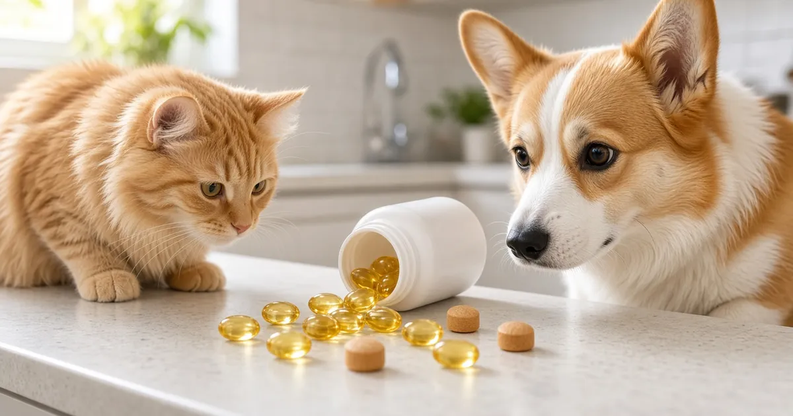

If your dog or cat ate vitamin D pills, gummies, or drops, call an animal poison control center or your vet now. Signs often take 12 to 48 hours to show, and treatment works best before then. Go straight to an emergency vet if your pet is a cat, ate any psoriasis cream with calcipotriene or calcitriol, or ate rat or mouse bait with vitamin D3. Use the vitamin D calculator to estimate the dose.
Enter weight, IU per pill, and how many. Get an urgency level and next steps. There is no "safe" result.

How the vitamin D calculator sorts results for dogs. 1 mg of vitamin D3 = 40,000 IU.
For a 20 lb (9 kg) dog, 0.1 mg per kg is about 36,000 IU and 0.5 mg per kg is about 181,000 IU. One 50,000 IU capsule is already in the Urgent range, and four are in the Emergency range.
Source: Merck Veterinary Manual. Check the IU on your label. This graphic is not a substitute for a call to your vet or a poison control line.
What to Do Right Now
- Take away the bottle or tube and count what is missing. Use the higher number if you are not sure.
- Check the Supplement Facts label for the IU or mcg per pill, gummy, or drop. 1,000 IU = 25 mcg.
- Call ASPCA Animal Poison Control, Pet Poison Helpline, or your vet, even if your pet seems fine.
- Do not make your pet vomit unless a professional tells you to.
- Tell the vet about any calcium in the supplement too. It adds its own calcium.
How Much Vitamin D Is Toxic?
The Merck Veterinary Manual reports that clinical signs may be seen in dogs at doses as low as 0.1 mg of vitamin D3 per kg (4,000 IU per kg), with marked rises in calcium and phosphorus and mineral deposits in soft tissues at 0.5 mg per kg (20,000 IU per kg). The reported acute lethal dose is 13 mg per kg.
The vitamin D calculator sorts dogs under 0.1 mg per kg as contact a professional now, 0.1 to under 0.5 mg per kg as Urgent, and 0.5 mg per kg or more as an Emergency. Cats are more sensitive than dogs and have no established cutoff, so any amount is an emergency for a cat.
Psoriasis creams with calcipotriene or calcitriol are far stronger than vitamin pills. Even a few licks from a tube can be serious, so any amount is an emergency.
Where Vitamin D Hides
- High-strength supplements: 5,000, 10,000, and 50,000 IU softgels and capsules pack a large dose into one pill.
- Gummies and chewables: tasty to dogs. Many gummies also contain xylitol, which is a separate emergency. Check the xylitol calculator.
- Drops and multivitamins: use the vitamin D line on the label. Multivitamins may also contain iron. See the iron pills guide.
- Psoriasis creams: calcipotriene or calcitriol. Any amount is an emergency.
- Rat and mouse bait with vitamin D3 (cholecalciferol): any amount is an emergency. See the rat poison guide.
Dogs vs Cats: What Is Different
- Sensitivity: cats are more sensitive to vitamin D3 than dogs (Pet Poison Helpline).
- Dose data: the 0.1 and 0.5 mg per kg figures are from dogs. For cats, treat any amount as an emergency.
- How they get it: dogs chew bottles and eat gummies. Cats more often lick cream from skin or a tube.
Symptoms and Timeline
- 12 to 48 hours: vomiting, not eating, weakness, tiredness, and drinking and peeing more.
- 1 to 4 days: dehydration, dark or bloody stool, and kidney injury on bloodwork as calcium rises.
- Severe cases: kidney failure and heart rhythm problems.
- Why it is tricky: a pet can look normal for a day or two while calcium is rising, so how your pet looks today does not rule out a problem.
Go Straight to an Emergency Vet If
- Your pet ate any psoriasis cream with calcipotriene or calcitriol
- Your pet ate rat or mouse bait with vitamin D3
- Your pet is a cat, or the calculator shows Emergency
- Your pet is vomiting, very thirsty, or not eating
What the Vet May Do
If the pills were eaten recently, the vet may make your pet vomit and then check calcium and kidney values over the next few days. Pets whose calcium rises may need IV fluids and medicines to bring it down, sometimes for several days. Early treatment and bloodwork matter more than how your pet looks today.
How to Prevent It
- Keep supplements in a closed cabinet, not on the counter or nightstand, and close child-resistant caps fully.
- Store gummy vitamins like candy: up high and out of reach.
- Wash your hands after applying psoriasis cream, and keep pets from licking treated skin.
- If you use vitamin D3 rodent bait, choose another method in homes with pets.
Related: iron pills, xylitol, and rat poison. For a room-by-room list, see the pet poison-proofing checklist.
Enter weight, IU per pill, and how many. Get an urgency level and next steps. There is no "safe" result.
Frequently Asked Questions
My dog ate vitamin D pills. What should I do?
Call poison control or your vet now, even if your dog seems fine. Have the bottle ready with the IU per pill and how many are missing. Signs often take 12 to 48 hours, and treatment works best before then.
How much vitamin D is toxic to a dog?
Signs have been reported at about 0.1 mg per kg, which is 4,000 IU per kg. For a 20 lb (9 kg) dog that is about 36,000 IU, which can be a few high-strength pills or less than one 50,000 IU capsule.
My dog ate one vitamin D gummy. Is that an emergency?
It depends on the strength and your dog's size, so enter both in the vitamin D calculator. Either way, call poison control or your vet. Many gummies also contain xylitol, which is a separate emergency.
Why can my pet look fine after eating vitamin D?
Vitamin D raises blood calcium slowly. Signs often take 12 to 48 hours, and kidney damage can follow. Early treatment and bloodwork matter more than how your pet looks today.
Is vitamin D more dangerous for cats?
Yes. Cats are more sensitive to vitamin D3 than dogs and have no established cutoff, so any amount a cat eats or licks is treated as an emergency.